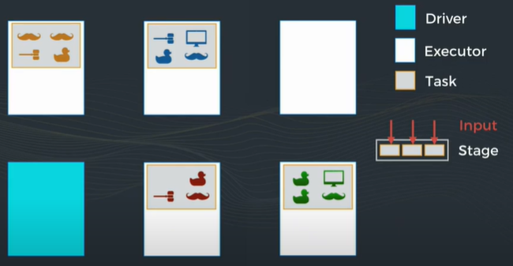
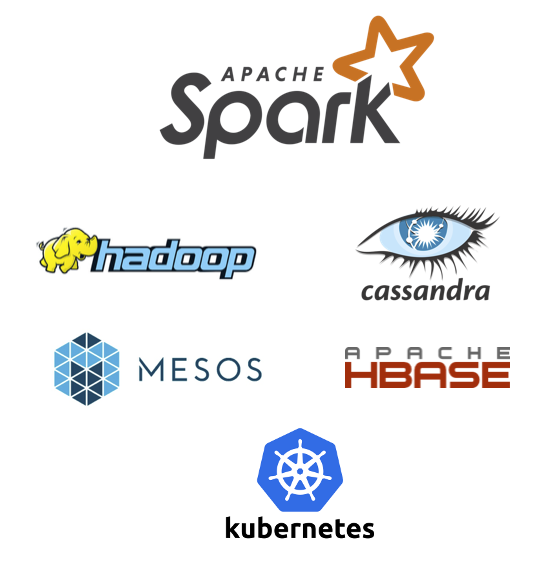

Spark
Le moteur de traitement de données
Rémi PICARD - Tech Lead
Spark
¬´ Lightning-fast unified analytics engine ¬ªC'est quoi ? üò≤
Historique
- Créé en 2009 à l'université de Californie à Berkeley
- Création de la société Databricks en 2013
- Projet Apache open source depuis 2013
- Sortie de Spark2 en 2016
- Incorporé dans les distributions Hadoop (Cloudera, MapR, Hortonworks, EMR...)
- Utilisé par tous les Cloud providers
- Sortie de Spark3 en 2020
Moteur de calculs distribués
- Traitements sur plusieurs machines
- Avec des milliers d'exécuteurs !
- Moteur développé en Scala
Inspiré de MapReduce
Spark vs Hadoop MapReduce
- Stockage des données intermédiaires en mémoire
- 10 à 100 fois plus rapide !
- Abstraction au dessus de MapReduce
- Traitements itératifs
Driver / Executor / Job / Stage / Task
Job / Stage / Task
Job / Stage / Task / Shuffle
Job / Stage / Task / Shuffle
Resilient Distributed Dataset (RDD)
- Unité de base de Spark
- API de bas niveau (transformations / actions)
- Données non structurées
DAG : graphe acyclique orienté
Du RDD au DataFrame
- DataFrame : Collection immutable de données distribuées
- ~ Table avec des colonnes
- Inspirées des dataframes R / pandas
- DataSet : Dataframe avec encore + de typage (API Scala/Java)
Spark
Pour qui ?
Ceux qui analysent / manipulent un très grand nombre de données
- DataEngineer
- DataScientist
- Des milliers d'entreprises

Pour quelles raisons ?
- Très grand volume de données à traiter
- Ecosystème Hadoop (DataLake)
- Techno cible pour les algos ML
Spark
Développement d'un job
Modules / API

Langages disponibles
- SQL
- Python
- Scala
- R
- Java
Une multitude de formats en entrée
- csv
- JSON
- Avro
- Parquet
- ORC
De nombreux connecteurs

Le code ressemble à quoi ?
Programmation fonctionnelle
from pyspark.sql.functions import col, avg
df = spark.read.option("header", True).csv("titanic.csv") \
.filter(col("Age").isNotNull()) \
.groupBy(col('Survived')) \
.agg(avg(col("age"))) \
.show()
Terminal Intéractif (REPL)
- pyspark (Python)
- spark-shell (Scala)
üßô‚Äç‚ôÇÔ∏è D√©mo Code
Spark
Lancement d'un job
CLI
- Commande spark-submit
Suivi
- Logs
- Interface Web Spark UI
- Grafana
Modes de lancement
Modes de lancement
- Standalone
- Orchestrateur Yarn / Mesos
- Kubernetes
- Databricks
Cloud
- Databricks
- GCP DataProc (Compute)
- GCP DataFlow
- PaaS Hadoop : AWS EMR, Azure HDInsight
Lien avec Hadoop ?
- Pas directement lié
- Nécessite un système de fichiers distribué (HDFS, S3, DBFS, abfs...)
Outil complexe
- Clusters complexes à configurer et à "scaler"
- Debugging compliqué et long
- Courbe d'apprentissage longue
- Gourmand en mémoire (plusieurs Go par traitement)